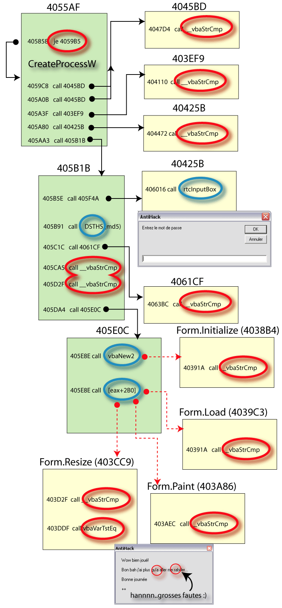

Date de publication : mardi 20 juin 2006
Auteur : BeatriX
3. Analyse du binaire.
Voici un résumé graphique du comportement de ce binaire et des points importants :

Que devons-nous voir ?
Tout simplement que les routines importantes sont sur fond vert et que les appels aux fonctions VB importants sont entourés en rouge.
Les fonctions VB utiles ici sont les fonctions classiques :
- vbaStrCmp : compare deux chaines. C'est le fameux if A=B then ...Elle renvoie 0 s'il y a égalité, 1 ou -1 en cas d'inégalités.
- rtcinputBox : Affiche une boite de dialogue. C'est une InputBox
- vbaNew2 : initialise une nouvelle Form. Permet de lancer la routine Form.Initialize
- VbaVarTstEq : Teste de comparaison entre deux variables.
Les autres fonctions VB n'ont quasiment aucune utilité (en tous cas, dans notre situation).
3.1. Le Lancement du binaire : Double démarrage
Avant de commencer l'analyse complète de vérification du mot de passe, nous devons nous attarder sur le lancement même de ce binaire. Pour résumer, AntiHack effectue une petite opération astucieuse visant à se détacher d'un éventuel processus parent (un debuggueur par exemple). Pour cela, il va lancer une seconde instance de lui-même par un simple shellexecute à laquelle il va passer un argument qui servira de vérificateur quant au bon déroulement de ce processus.
Entrons maintenant plus dans le détail.
Le programme débute réellement en 4055AF. Il commence par tester si le programme dispose d'un argument passé en ligne de commande en faisant appel à la fonction rtcCommandVar (en fait, les prog VB font tous un GetCommandLineA avant de démarrer le programme à proprement parlé). le programme va ensuite tester s'il existe déjà une instance de AntiHack lancée. Le test qui vérifie ceci est en 405858. Ce genre de check en VB se programme de la façon suivante :
If App.PrevInstance Then
MsgBox ("The Programme is already running!"), vbExclamation
Unload Me
Exit Sub
End If
Que se passe-t-il réellement ?
En pratiquant un petit peu de reverse sur un programme VB6, on constate que pour effectuer cette tâche, le prog effectue en réalité les tâches suivantes :
1 . GetCurrentProcessId 2 . GetModuleFileNameA 3 . LCMapStringA (LCMAP_UPPERCASE) sur le chemin complet 4 . Remplacer les "\" par des "?" 5 . CreateSemaphoreA dont le nom sera la chaine obtenue précédemment. 6 . RtlGetLastWin32Error. Si ERROR_ALREADY_EXISTS, une instance existe déjà.
Il crée un Semaphore à partir du nom et du chemin du programme concerné. Si le semaphore existe déjà, ceci signifie qu'une autre instance de ce programme existe déjà. En d'autres termes, si on change le nom du prog, un prog VB n'est pas capable de détecter une autre Instance de lui-même.
Si le saut en 405858 n'est pas effectué, ceci veut dire qu'il n'existe pas d'instance déjà lancée. Le programme ( que je vais appeler Instance1) va alors calculer un hash MD5 sur la chaine ID1+ "C:\WINDOWS". ID1 est l'ID du processus en cours et a été récupérée par GetCurrentProcessId. La chaine "C:\WINDOWS" est le chemin vers le dossier windows et a été récupérée par GetWindowsDirectoryA.
Une fois ce hash calculé, il effectue un rtcShell sur lui même en passant le MD5 en argument. C'est ce que j'ai résumé sur le schéma par un CreateProcessW (il s'agit au final de cette fonction même si l'auteur a fait un rtcShell.
La nouvelle instance ( Instance2 ) va effectuer les mêmes opérations. Elle va récupérer l'argument (le MD5) qui lui a été transmis par Instance1 et va tester si cet argument provient bien de Instance1. A ce moment, le saut en 405858 est réalisé.
3.2. Validation du double démarrage
A ce stade, nous avons deux instances Instance1 et Instance2 qui tournent sur la machine. Instance2 va vérifier alors que c'est bien Instance1 qui l'a lancée. Avant que cette vérification se fasse, Instance1 s'arrête à l'aide d'un vbaEnd. Nous n'avons donc plus que Instance2 qui tourne sur la machine.
Instance2 va d'abord faire un SnapShot des processus en cours à l'aide de CreateToolhelp32Snapshot. Elle va alors se rechercher elle-même en comparant son ID aux IDs trouvés à l'aide des fonctions Process32First et Process32Next. Dès qu'elle trouve son propre processus, elle récupère l'ID du processus qui l'a lancée, c'est-à-dire celle de Instance1. Ce tour de passe-passe est faisable grâce à la structure renvoyée par Process32Next, une PROCESS32ENTRY qui se décline de la façon suivante :
typedef struct tagPROCESSENTRY32 {
DWORD dwSize;
DWORD cntUsage;
DWORD th32ProcessID;
DWORD th32DefaultHeapID;
DWORD th32ModuleID;
DWORD cntThreads;
DWORD th32ParentProcessID;
LONG pcPriClassBase;
DWORD dwFlags;
TCHAR szExeFile[MAX_PATH];
DWORD th32MemoryBase;
DWORD th32AccessKey;
} PROCESSENTRY32;
typedef PROCESSENTRY32* PPROCESSENTRY32;
typedef PROCESSENTRY32* LPPROCESSENTRY32;
Le champ th32ParentProcessID contient l'ID recherché.
une fois l'ID récupéré (ID1), Instance2 va recalculer un hash MD5 sur ID1+"C:\WINDOWS" et va comparer ce hash avec celui qui lui a été transmis en ligne de commande. En cas d'inégalité, Instance2 considère qu'elle n'a pas été lancée par Instance1 et s'arrête immédiatement. Ces tests sont effectués en 4047D4, 404110 et 404472.
3.3. Saisie et vérification du mot de passe
Le mot de passe est saisi à l'aide d'une InputBox lancée en 406016. Une série de manipulations est effectuée sur ce mot de passe et un hash MD5 est calculé sur ce mot de passe modifié en 405B91. Vont suivre des vérifications sur ce hash. Certaines de ces vérifications sont factices. En fait, le hash MD5 doit être égal à un hash hardcodé qui vaut A8B221A57EFAA8DAD2C7DFC8993BE4A3. Si les tests sont concluants, le binaire continue en 405E0C (troisième cadre vert du schéma).
3.4. Affichage de la fenêtre de félicitations
La fenêtre est initialisée par la fonction vbaNew2 et lance la routine 4038B4. Cette routine "Form.Initialize" vérifie également le MD5 calculé.
La fenêtre est alors lancée en 405E8E et les routines Form.Resize, Form.Load et Form.Paint vont à leur tour vérifier la valeur du MD5.
4. Patcher le binaire.
Nous pouvons alors patcher tous les sauts conditionnels qui suivent les vbaStrCmp de façon à faire croire que cette fonction renvoie 0 dans le cas de comparaisons des MD5. On peut également patcher la routine de calcul du MD5 pour qu'elle renvoie le MD5 hardcodé ci-dessus.
Vous trouverez une version patchée qui accepte n'importe quel mot de passe en cliquant ICI
5. Mot de la fin.
Nous avons constaté que malgré la complexité du code généré par VB6, il dispose de grosses failles de sécurité comme la fonction vbaStrCmp qui apparaît dès qu'une comparaison est effectuée. On peut alors facilement repérer les routines principales sans trop de mal.
Merci à sebdraluorg pour nous avoir permis de travailler un peu sur du VB. un chti coucou aux petits cocos qui ont également participé à ce défi : baboon, skirby, =GAMERA=, mr.tux et Beginner.
Grosses caresses aux titis de la FRET et aux totos de LABO (quelle rime :) ) ainsi que tous les mimis de FC.
BeatriX - lundi 19 juin 2006 - 23h34
Copyright (C)- FRET (2006)